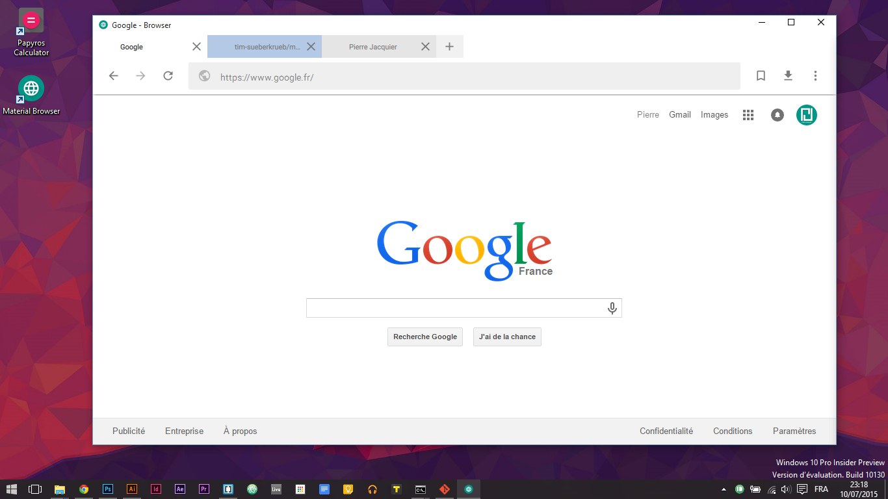

Liri Browser
Liri Browser is a minimal web-browser created for the Linux distribution Papyros by Tim Süberkrüb. It is written in Qt/QML, using QtWebEngine, based on chromium engine, with their QML-Material framework.
Screenshots
Download 0.2
Changelog
0.2
- New design choices
- New integrated tab system
- Improved bookmark system
- Secure connection icon
- Warning dialog on certificate errors
0.1
- Bookmarks
- Favicons
- Download
- Fullscreen
- Search in website
- Browser settings
- Browser history
- Support for custom theme color (meta tag "theme-color")